About
Sepultura was born in Belo Horizonte, Minas Gerais, in 1984, during a time when Brazil’s underground
metal scene was burgeoning with energy and rebellion. The band was formed by brothers Max Cavalera
(guitar and vocals) and Igor Cavalera (drums), who were heavily influenced by bands like Venom, Slayer,
Celtic Frost, Hellhammer, Motörhead, and Metallica. Their father had passed away a few years earlier,
and music became both a coping mechanism and a way to express their anger and creativity.
The name "Sepultura" (which means "grave" in Portuguese) was inspired when Max translated the title of
the Motörhead song “Dancing on Your Grave” into Portuguese. The literal translation stuck and became the
band’s name—dark, strong, and symbolic of their sound.
The early lineup featured Max and Igor, alongside Jairo Guedz (guitar) and Paulo Jr. (bass). Their early
sound was raw, aggressive, and heavily rooted in early death and black metal styles, characterized by
lo-fi recordings and dark, apocalyptic lyrics.
The First Era – Death/Black Metal Roots (1986–1989)
Album: Morbid Visions (1986)
Their debut album, Morbid Visions, released in 1986 by Cogumelo Records, captured the band’s early
black metal influences. The track “Troops of Doom” became one of their early hits and defined the
underground aggression of their style.
After this release, Jairo Guedz left the band and was replaced by Andreas Kisser, a young and
skilled guitarist who would play a key role in shaping Sepultura’s musical identity moving forward.
Album: Schizophrenia (1987)
With Kisser on guitar, Schizophrenia marked a huge leap in technical and musical evolution. Released
in 1987, it fused thrash elements with their earlier extreme metal style. The album gained attention
from international labels and was distributed in Europe and the U.S., setting Sepultura on a path to
global recognition.
The Thrash Metal Breakthrough (1989–1993)
Album: Beneath the Remains (1989)
Recorded in Rio de Janeiro and mixed in the U.S. by legendary producer Scott Burns, Beneath the
Remains was released under Roadrunner Records and is considered a thrash metal masterpiece. With
tight riffs, critical lyrics, and polished production, the album established Sepultura on the global
metal stage.
Album: Arise (1991)
One of Sepultura’s most technically proficient albums, Arise pushed their boundaries further with
songs like “Dead Embryonic Cells” and “Arise.” The band began headlining international tours and
became a staple at major metal festivals worldwide..
Tribal Experimentation and Worldwide Fame (1993–1996)
Album: Chaos A.D. (1993)
This album marked a turning point in Sepultura’s sound. They began experimenting with Brazilian
rhythms, tribal percussion, and political themes. Chaos A.D. featured iconic tracks like
“Refuse/Resist,” “Territory,” and “Slave New World.” The sound leaned more toward groove metal, and
the band’s originality flourished.
Album: Roots (1996)
Roots was a bold and innovative album that fused indigenous Brazilian music, nu metal, and
traditional heavy metal. The track “Itsári” featured members of the Xavante tribe, and “Roots Bloody
Roots” became the band’s most recognized anthem. The album reached high positions on charts in the
U.S. and Europe and heavily influenced the global metal scene.
Max Cavalera’s Departure and New Era (1997–2005)
In 1996, Max Cavalera left Sepultura after internal conflicts, especially over disagreements
involving the band’s management, led by Max’s wife, Gloria Cavalera. His departure shocked fans and
marked the end of an era. Max would go on to form Soulfly.
Album: Against (1998)
American vocalist Derrick Green was chosen to replace Max. Against retained experimental elements but
received mixed reviews. Despite this, the band continued to tour and evolve.
Albums: Nation (2001), Roorback (2003), Dante XXI (2006)
Nation had strong conceptual and political messages. Roorback returned to a more aggressive thrash
sound, while Dante XXI, inspired by Dante Alighieri’s "Divine Comedy", marked the band’s turn toward
conceptual records with profound lyrical depth.
Reinvention and Stability (2006–2011)
With Derrick Green firmly established, Sepultura redefined its sound. Andreas Kisser took on a more
prominent role in composition and creative direction.
Album: A-Lex (2009)
Inspired by Anthony Burgess’ novel A Clockwork Orange, A-Lex continued the band's trend of conceptual
albums, mixing narrative themes with dynamic thrash and experimental elements.
Igor’s Departure and New Blood (2011–present)
In 2006, Igor Cavalera left Sepultura, citing personal reasons and musical differences. He was
replaced first by Jean Dolabella, and later by the phenomenal drummer Eloy Casagrande, whose
technical skills brought new vitality to the band.
Albums: Kairos (2011), The Mediator Between Head and Hands Must Be the Heart (2013), Machine Messiah
(2017)
These albums saw Sepultura delve deeper into modern metal landscapes while maintaining their
intensity. Machine Messiah in particular was critically acclaimed for its complexity and Eloy’s
drumming.
Modern Era and Farewell (2020–2024)
Album: Quadra (2020)
Inspired by numerology and societal structures, Quadra is divided into four distinct stylistic
sections, representing different eras of the band. It’s considered one of their most ambitious and
well-produced albums, with tracks like “Isolation” receiving strong acclaim.
In February 2024, Sepultura announced their farewell tour, titled “Celebrating Life Through Death”,
marking the end of their journey after 40 years. The announcement came alongside the temporary
replacement of Eloy Casagrande with Greyson Nekrutman, known for his technical prowess.
Morbid Visions
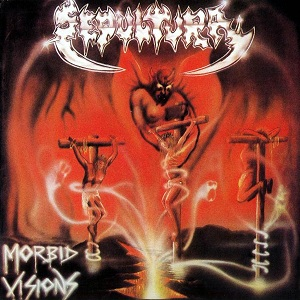
Tracks
- 1. Morbid Visions
- 2. Mayhem
- 3. Troops Of Doom
- 4. War
- 5. Crucifixion
- 6. Show Me The Wrath
- 7. Funeral Rites
- 8. Empire Of The Damned
- 9. The Curse
- 10. Bestial Devastation
- 11. Antichrist
- 12. Necromancer
- 13. Warriors Of Death
- 14. Anticop
Sepultura's debut album, raw and primitive in both production and sound. Lyrics focus on satanic
and apocalyptic themes. Influenced by bands like Venom and Hellhammer. “Troops of Doom” stands out
as an early classic.
Schizophrenia
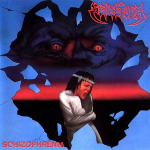
Tracks
- 1. Intro
- 2. From the Past Comes the Storms
- 3. To the Wall
- 4. Escape to the Void
- 5. Inquisition Symphony
- 6. Screams Behind The Shadows
- 7. Septic Schizo
- 8. The Abyss
- 9. R.I.P (Rest In Pain)
- 10. Troops Of Doom
First album with Andreas Kisser on guitar. Major improvement in musicianship and songwriting. A
blend of death and thrash metal. Songs like “From the Past Comes the Storms” drew international
attention.
Beneath The Remains
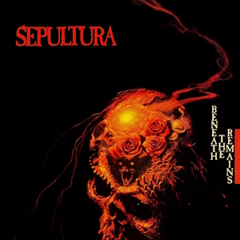
Tracks
- 1. Beneath The Remains
- 2. Inner Self
- 3. Stronger Than Hate
- 4. Mass Hypnosis
- 5. Sarcastic Existence
- 6. Slaves Of Pain
- 7. Lobotomy
- 8. Hungry
- 9. Primitive Future
- 10. A Hora E A Vez do Cabelo Crescer
Their global breakthrough, produced by Scott Burns. Razor-sharp riffs and socially aware lyrics.
Considered one of the best thrash albums of all time. Highlights: “Inner Self”, “Stronger Than
Hate”.
Arise
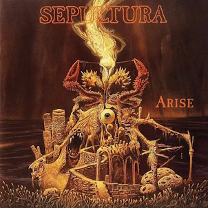
Tracks
- 1. Arise
- 2. Dead Embryonic Cells
- 3. Desperate Cry
- 4. Murder
- 5. Subtraction
- 6. Altered State
- 7. Under Siege
- 8. Meaningless Movements
- 9. Infected Voice
- 10. Orgasmatron
- 11. Intro (Arise Sessions)
- 12. C.I.U (Criminals in Uniform)
- 13. Desperate Cry (Scott Burns Mix)
A technical and aggressive record that cemented Sepultura as global metal leaders. Complex
structures and faster tempos. Tracks like “Arise” and “Dead Embryonic Cells” became instant fan
favorites.
Chaos A.D.
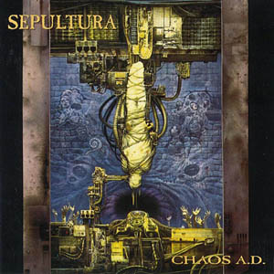
Tracks
- 1. Refuse/Resist
- 2. Territory
- 3. Slave New World
- 4. Amen
- 5. Kaiowas
- 6. Propaganda
- 7. Biotech Is Godzilla
- 8. Nomad
- 9. We Who Are Not As Others
- 10. Manifest
- 11. The Hunt
- 12. Clenched Fist
A stylistic shift toward slower, groovier rhythms. Fuses punk, tribal percussion, and political
themes. “Refuse/Resist” and “Territory” show the band’s new direction. Marked their peak in critical
acclaim.
Roots
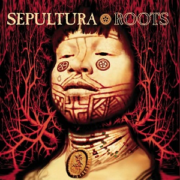
Tracks
- 1. Roots Bloody Roots
- 2. Attitude
- 3. Cut-Throat
- 4. Ratamahatta
- 5. Breed Apart
- 6. Straighthate
- 7. Spit
- 8. Lookaway
- 9. Dusted
- 10. Born Stubborn
- 11. Jasco
- 12. Itsári
- 13. Ambush
- 14. Endangered Species
- 15. Dictatorshit
- 16. Canyon Jam
Groundbreaking mix of metal, Brazilian tribal rhythms, and indigenous instruments. Includes Xavante
tribe recordings. “Roots Bloody Roots” became their signature track. A genre-defining album.
Against
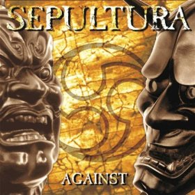
Tracks
- 1. Against
- 2. Choke
- 3. Rumors
- 4. Old Earth
- 5. Floaters in Mud
- 6. Boycott
- 7. Tribus
- 8. Common Bonds
- 9. F.O.E
- 10. Reza
- 11. Unconscious
- 12. Kamaitachi
- 13. Drowned Out
- 14. Hatred Aside
- 15. T3rcermillennium
First album with Derrick Green. Continued tribal elements but with mixed reception. Marks a
transition period. Notable tracks: “Against”, “Choke”.
Nation
Tracks
- 1. Sepulnation
- 2. Revolt
- 3. Border Wars
- 4. One Man Army
- 5. Vox Populi
- 6. The Ways Of Faith
- 7. Uma Cura
- 8. Who Must Die?
- 9. Sage
- 10. Tribe To A Nation
- 11. Politricks
- 12. Human Cause
- 13. Reject
- 14. Water
- 15. Valtio
Concept album about a utopian nation. Political lyrics, experimental textures, and varied rhythms.
Bold but polarizing among fans. Standouts: “One Man Army”, “Sepulnation”.
Roorback
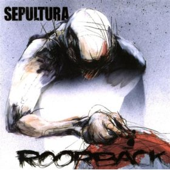
Tracks
- 1. Come Back Alive
- 2. Godless
- 3. Apes of God
- 4. More of the Same
- 5. Urge
- 6. Corrupted
- 7. As It Is
- 8. Mind War
- 9. Leech
- 10. The Rift
- 11. Bottomed Out
- 12. Activist
- 13. Outro
- 14. Bullet the Blue Sky
A return to more aggressive roots. Raw production and politically charged lyrics. A fierce and
straightforward record. Highlights include “Come Back Alive”, “Mind War”.
Dante XXI
Tracks
- 1. Lost
- 2. Dark Wood of Error
- 3. Convicted in Life
- 4. City of Dis
- 5. False
- 6. Fighting On
- 7. Limbo (Intro)
- 8. Ostia
- 9. Buried Words
- 10. Nuclear Seven
- 11. Repeating the Horror
- 12. Eunoe (Intro)
- 13. Crown and Miter
- 14. Primium Mobile (Intro)
- 15. Still Flame
Based on Dante Alighieri's Divine Comedy, the album is divided into Inferno, Purgatory, and
Paradise.
Musically dramatic and lyrically deep. Critically praised as a highlight of the Derrick Green era.
A-lex
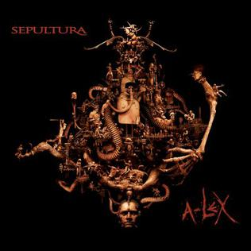
Tracks
- 1. A-Lex I
- 2. Moloko Mesto
- 3. Filthy Rot
- 4. We've Lost You
- 5. What I Do!
- 6. A-Lex II
- 7. The Treatment
- 8. Metamorphosis
- 9. Sadistic Values
- 10. Forceful Behavior
- 11. Conform
- 12. A-Lex III
- 13. The Experiment
- 14. Strike
- 15. Enough Said
- 16. Ludwig Van
- 17. A-Lex IV
- 18. Paradox
Inspired by A Clockwork Orange. First album without Igor Cavalera. Themes of violence, freedom, and
control.
Powerful and direct, with standout tracks like “Moloko Mesto”.
Kairos
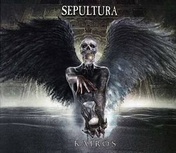
Tracks
- 1. Spectrum
- 2. Kairos
- 3. Relentless
- 4. 2011
- 5. Just One Fix
- 6. Dialog
- 7. Mask
- 8. 1433
- 9. Seethe
- 10. Born Strong
- 11. Embrace The Storm
- 12. 5772
- 13. No One Will Stand
- 14. Structure Violence (Azzes)
- 15. 4648
- 16. Firestarter
- 17. Point of No Return
A concept album centered on time and the band’s journey. Heavy, modern sound with focused
songwriting.
Tracks like “Kairos” and “Relentless” reflect introspection and force.
The Mediator Between Head and Hands Must Be the Heart
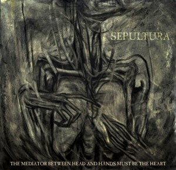
Tracks
- 1. Trauma of War
- 2. The Vatican
- 3. Impending Doom
- 4. Manipulation of Tragedy
- 5. Tsunami
- 6. The Bliss Of Ignorants
- 7. Grief
- 8. The Age Of The Atheist
- 9. Obsessed
- 10. Da Lama Ao Caos
- 11. Stagnate State of Affairs
Inspired by the film Metropolis. Produced by Ross Robinson, this album is intense, dark, and
chaotic.
Eloy Casagrande’s drumming is a standout feature.
Machine Messiah
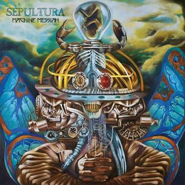
Tracks
- 1. Machine Messiah
- 2. I Am The Enemy
- 3. Phantom Self
- 4. Alethea
- 5. Iceberg Dances
- 6. Sworn Oath
- 7. Resistant Parasites
- 8. Silent Violence
- 9. Vandals Nest
- 10. Cyber God
- 11. Chosen Skin
- 12. Ultraseven No Uta
A concept about technology, faith, and artificial intelligence. Musically ambitious, blending
melodic
moments with brutality. Tracks like “Phantom Self” received critical acclaim.
Quadra
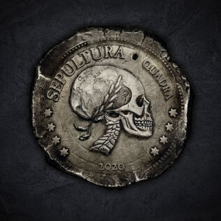
Tracks
- 1. Isolation
- 2. Means To An End
- 3. Last Time
- 4. Capital Enslavement
- 5. Ali
- 6. Raging Void
- 7. Guardians of Earth
- 8. The Pentagram
- 9. Autem
- 10. Quadra
- 11. Agony of Defeat
- 12. Fear, Pain, Chaos, Suffering
Divided into four stylistic sections ("quadrants"), each exploring different sounds: classic thrash,
groove,
melodic, and progressive. Highly praised for its diversity and production. “Isolation” and “Means to
an End”
are key tracks.